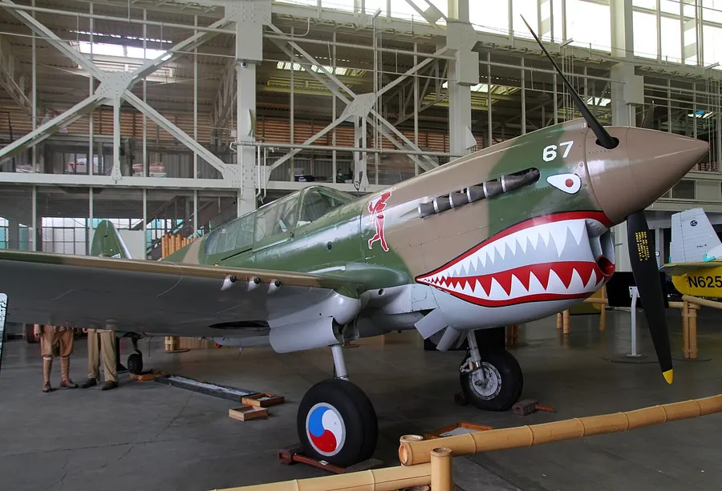

P-40 operations · 1939–1945
The P-40 was not the fastest or most glamorous fighter, but it was rugged, available and heavily used across harsh theatres. It served as Tomahawk, Kittyhawk and Warhawk with USAAF, RAF, Commonwealth, Soviet and Chinese/AVG-linked units. For modellers, the strength is variety: AVG shark-mouth noses, desert Kittyhawks, Pacific RAAF/RNZAF aircraft, Aleutian Warhawks and weather-beaten fighter-bombers.

Role & strengths
- Rugged Allied fighter and fighter-bomber
- AVG shark-mouth, RAF Kittyhawk and USAAF Warhawk subjects
- Desert, Pacific, Aleutian, CBI and Soviet routes
- Heavy dust, fading, exhaust staining and chipped access wear
- Clear variant differences across Tomahawk, Kittyhawk and Warhawk marks
Key theatres
- China-Burma-India and AVG Flying Tigers
- North Africa and Desert Air Force Kittyhawks
- South-West Pacific RAAF/RNZAF operations
- Aleutians, Mediterranean and Soviet lend-lease
Specification P-40E
Survivors today

Surviving P-40s are useful for intake shape, cockpit framing, undercarriage stance, wing-root wear, exhaust staining and the distinctive long-nose profile.
View survivorsTimeline highlights
Build this P-40 as…
Pick the theatre first. AVG Flying Tigers, RAF desert Kittyhawks, USAAF Aleutian aircraft, RAAF/RNZAF Pacific machines and Soviet lend-lease P-40s all weather differently.
Aircraft identity
Tomahawk, Kittyhawk and Warhawk marks have different noses, guns, panels and markings. Choose the exact variant before buying decals.
Shark mouths are not all the same. AVG, 112 Squadron RAF and later theatre markings have different shapes, colours and placement.
Paint scheme cards
AVG aircraft need specific shark-mouth, Chinese roundels and heavy dusty theatre wear.
RAF Kittyhawks show sun fading, sand abrasion, filter grime and rough servicing.
USAAF Warhawks need fading, exhaust staining, dusty airfields and chipped access zones.
RAAF/RNZAF aircraft can show harsh sun, coral dust, mud, humidity and non-standard repainting.
Campaign cards
Use 1st, 2nd or 3rd Pursuit Squadron routes. Shark mouth, Chinese roundels and dusty CBI weathering dominate.
112, 3 RAAF and 450 RAAF Squadron Kittyhawks need desert colours, dust, sun fading and RAF/Commonwealth markings.
RAAF/RNZAF P-40s show heat, rain, mud, coral dust and rough servicing.
Alternative Warhawk routes with OD/grey, winter/cold weather or lend-lease markings and field wear.
Build difficulty and related guides
Medium. Shape and seams are manageable, but nose, variant and markings need care.
High. Shark mouths, roundels, theatre repainting and squadron codes must match the aircraft.
High. Desert and Pacific wear can be heavy, but it must stay directional and photo-led.
P-40 groups and squadrons
Sortable P-40 unit cards covering AVG Flying Tigers, Desert Air Force Kittyhawks, USAAF Warhawks, RAAF/RNZAF Pacific squadrons and Soviet lend-lease routes.
P-40 Warhawk operating map
Airfield info
Click a marker to show linked P-40 unit cards and modelling notes.
Campaign timeline
Survivors
Books and reference sources
P-40 Warhawk build guide
P-40 Warhawk videos, photos and archive material
Media replaces the old separate walkaround tab: cockpit, exhaust, undercarriage, markings, survivor references, archive imagery and video cards are grouped here.